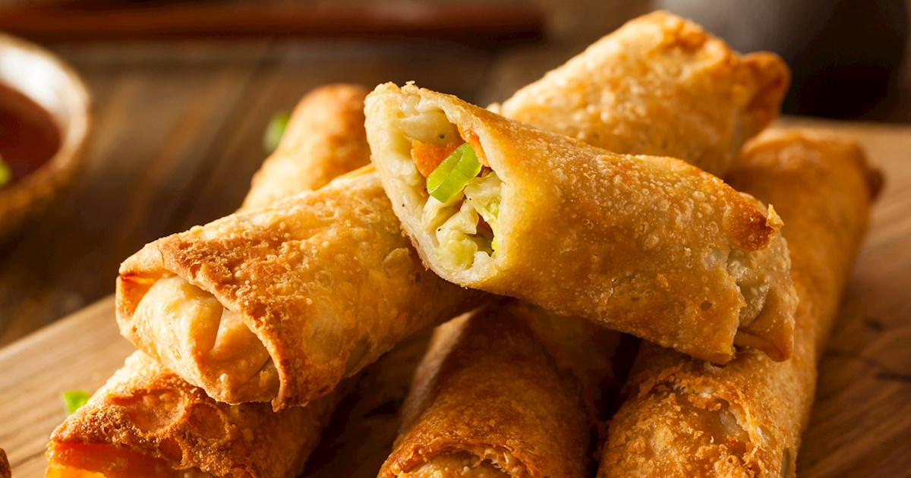

Spring rolls are traditional Chinese snacks consisting of thin sheets of dough that are filled with various ingredients, then deep-fried in hot oil. Some of the more common ingredients for the filling include shredded pork, shrimp, mushrooms, and cabbage.
Meal prep time : 1 hour 5 minutes
Servings : 4